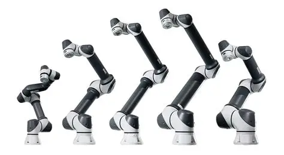
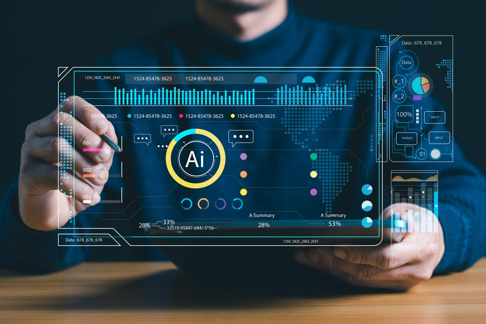

専門
ここでは私が専攻している専門コースを紹介しています。
サイバーセキュリティコース
ネットワークやシステムを安全に運用するための知識と技術を学ぶコースです。 情報漏洩や不正アクセスなどの脅威に対する対策方法について理解を深めます。 暗号化、認証、セキュリティ管理など、情報社会を支える基礎技術を学習します。
IoT・ロボティクスエンジニアコース

センサーや機器をインターネットにつなぐIoT技術と、ロボット制御に関する技術を学ぶコースです。 ハードウェアとソフトウェアの両面から、システム開発の基礎を学習します。 組込み技術やデータ通信など、実社会で活用される技術について理解を深めます。
AI・データサイエンティストコース

AI技術やデータ分析に必要な知識を学ぶコースです。 統計、機械学習、プログラミングを通して、データを活用する方法を学習します。 大量のデータから課題を発見し、分析・予測を行うための基礎力を身につけます。